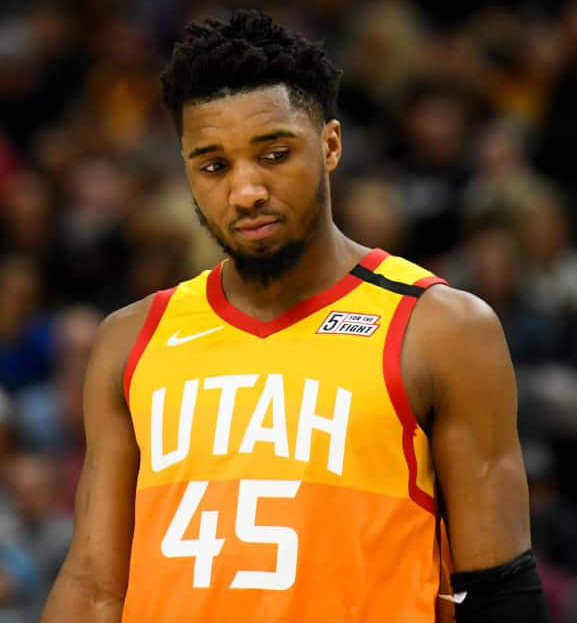

Jazz

The Utah Jazz are an American professional basketball team based in Salt Lake City. The Jazz compete in the National Basketball Association (NBA) as a member of the league's Western Conference, Northwest Division. Since 1991, the team has played its home games at Vivint Smart Home Arena. The franchise began play as an expansion team in 1974 as the New Orleans Jazz (as a tribute to New Orleans' history of originating Jazz music). The Jazz moved to Salt Lake City in 1979. The Jazz were one of the least successful teams in the league in their early years. Although 10 seasons elapsed before the Jazz qualified for their first playoff appearance in 1984, they did not miss the playoffs again until 2004. During the late 1980s, John Stockton and Karl Malone arose as the franchise players for the team, and formed one of the most famed point guard–power forward duos in NBA history. Led by coach Jerry Sloan, who took over from Frank Layden in 1988, they became one of the powerhouse teams of the 1990s, culminating in two NBA Finals appearances in 1997 and 1998, where they lost both times to the Chicago Bulls, led by Michael Jordan. Both Stockton and Malone moved on in 2003. After missing the playoffs for three consecutive seasons the Jazz returned to prominence under the on-court leadership of point guard Deron Williams. However, partway through the 2010–11 season, the Jazz began restructuring after Sloan's retirement and Williams' trade to the New Jersey Nets. Quin Snyder was hired as head coach in June 2014. With the development of Donovan Mitchell and Rudy Gobert into All-Stars, the Jazz launched themselves back into playoff contention.
 John Houston Stockton (born March 26, 1962) is an American retired professional basketball player. He spent his entire NBA career (1984–2003) as a point guard for the Utah Jazz, and the team made the playoffs in each of his 19 seasons. In 1997 and 1998, together with his longtime teammate Karl Malone, Stockton led the Jazz to the franchise's only two NBA Finals appearances.
Stockton is a ten-time NBA All-Star and a two-time Naismith Memorial Basketball Hall of Fame inductee (in 2009 for his individual career, and in 2010 as a member of the 1992 United States men's Olympic basketball team "Dream Team"). In 1996, he was named one of the 50 greatest players in NBA history. Stockton holds the NBA records for most career assists and steals by wide margins and is regarded as one of the greatest point guards of all time.
John Houston Stockton (born March 26, 1962) is an American retired professional basketball player. He spent his entire NBA career (1984–2003) as a point guard for the Utah Jazz, and the team made the playoffs in each of his 19 seasons. In 1997 and 1998, together with his longtime teammate Karl Malone, Stockton led the Jazz to the franchise's only two NBA Finals appearances.
Stockton is a ten-time NBA All-Star and a two-time Naismith Memorial Basketball Hall of Fame inductee (in 2009 for his individual career, and in 2010 as a member of the 1992 United States men's Olympic basketball team "Dream Team"). In 1996, he was named one of the 50 greatest players in NBA history. Stockton holds the NBA records for most career assists and steals by wide margins and is regarded as one of the greatest point guards of all time.
Donovan Mitchell Jr. (born September 7, 1996) is an American professional basketball player for the Utah Jazz of the National Basketball Association (NBA). He played college basketball for the Louisville Cardinals. He was selected by the Denver Nuggets with the 13th overall pick in the 2017 NBA draft and was traded on draft night to the Utah Jazz. During his rookie season, Mitchell was named to the NBA All-Rookie First Team and won the 2018 Slam Dunk Contest.